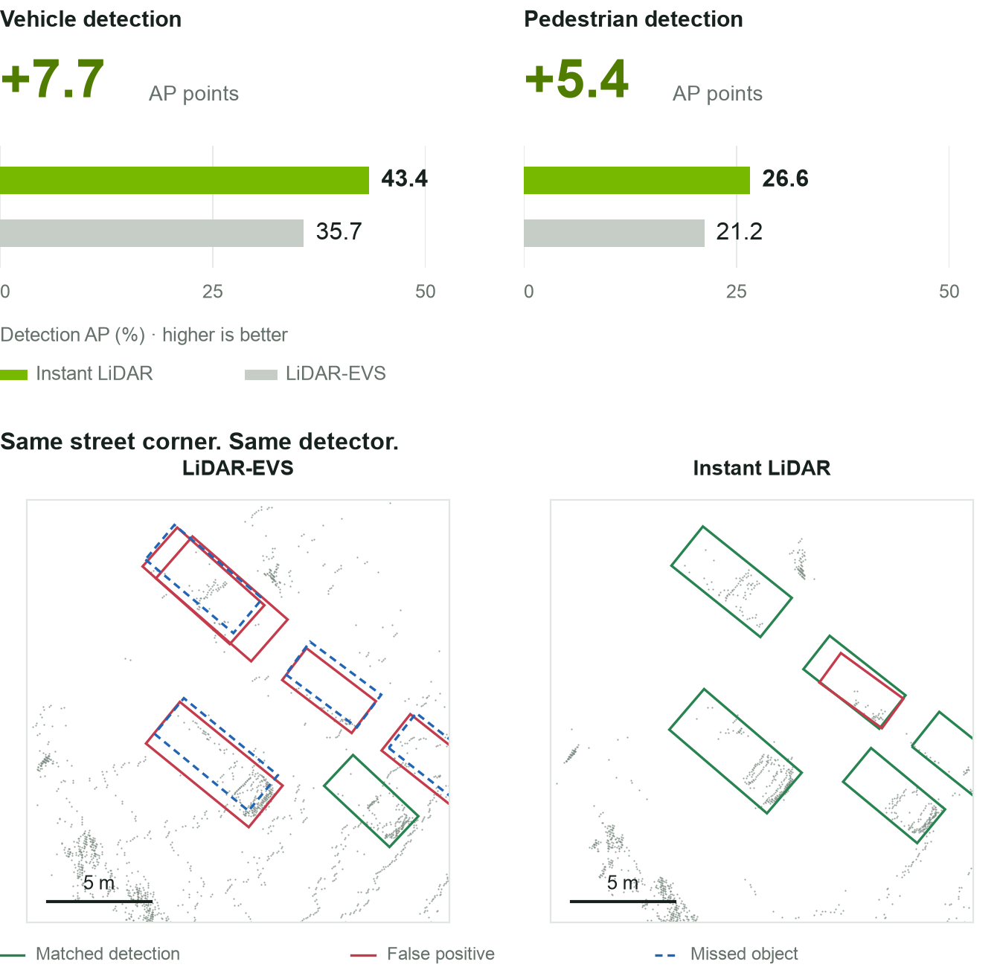
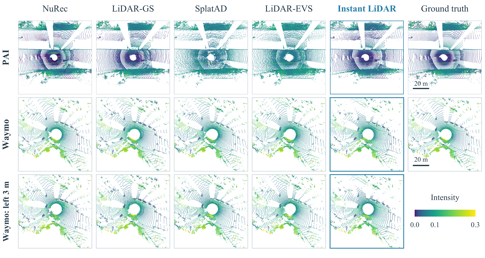

Measurement-anchored prediction
Use recorded LiDAR returns as geometric anchors and predict Gaussian attributes around those observations.
NVIDIA · Research project
Feed-Forward Gaussian Reconstruction for LiDAR Simulation
NVIDIA
Turn LiDAR point clouds into reusable 3D scenes for autonomous-driving simulation. Reconstruct a scene once, then render new driving paths and sensor configurations—without optimizing each new scene separately.
66 s
Waymo scene reconstruction
~70×
faster than NuRec on Waymo
127 s
PAI reconstruction · ~46× faster
Averages over six clips per dataset on NVIDIA H20. Time covers input scans to a renderable asset; offline training, rendering, and detection are excluded.
Overview
LiDAR reconstruction supports closed-loop autonomous driving simulation, but hours of per-scene optimization make large asset libraries costly to build and maintain. We present Instant LiDAR, a feed-forward pipeline that reconstructs multiple LiDAR scans as reusable Gaussian assets in minutes without per-scene optimization.
LiDAR measurements provide strong geometric priors, but directly initializing Gaussians from them yields poor reconstruction due to nonuniform sampling and a limited field of view. Sparse returns leave surface gaps, while combining scans expands coverage but introduces redundant primitives. To address these challenges, Instant LiDAR combines measurement-anchored Gaussian prediction, sampling-aware Gaussian scales, and multi-frame consolidation. The predictor refines attributes anchored to recorded returns, while the scales adapt spatial support to LiDAR sampling. Multi-frame consolidation merges overlapping predictions into a compact asset spanning the driving log.
Compared with NuRec, Instant LiDAR reconstructs scenes approximately 46× faster on Physical AI (PAI) and 70× faster on Waymo. It also achieves comparable downstream 3D detection accuracy on Waymo.
Method
A trained model predicts Gaussian attributes from LiDAR measurements, then combines the predictions into a scene spanning the driving log.

Use recorded LiDAR returns as geometric anchors and predict Gaussian attributes around those observations.
Adapt Gaussian support to LiDAR sampling, helping fill gaps without treating near and distant returns identically.
Register and merge overlapping predictions into a compact asset that supports repeated rendering.
Experimental results
Reconstruction time and downstream detection measure different parts of the value of a reusable scene.
The same recorded trajectory, shown as NuRec, Instant LiDAR, and ground truth.
Input LiDAR scans → renderable Gaussian asset
Same NVIDIA H20 GPU; six clips per dataset. Linear bar lengths show elapsed time. NuRec, LiDAR-GS, SplatAD, and LiDAR-EVS use per-scene optimization.
| Method | Time (s) ↓ | CD (m) ↓ | F@5 ↑ |
|---|
CD is Chamfer distance; F@5 is the F-score at 5 cm. Faster reconstruction does not imply better scene-wide geometry: the strongest per-scene methods retain an advantage in these metrics.
One frozen CenterPoint detector. Different query viewpoints.
| Reconstruction | Vehicle AP ↑ | Pedestrian AP ↑ |
|---|


Instant LiDAR trades some scene-wide geometric fidelity for reconstruction speed while preserving useful downstream detection quality. It relies on accurate sensor poses and dynamic-object annotations. Joint camera–LiDAR reconstruction is not part of the current model; the Cosmos workflow is a separate demonstration of generation followed by LiDAR reconstruction.
Read more
See the manuscript for the full evaluation, ablations, reconstruction details, and supplementary material.
@misc{kang2026instantlidar,
title = {Instant LiDAR: Feed-Forward Gaussian
Reconstruction for LiDAR Simulation},
author = {Kang, Xin and Huang, Jiahui and Ren, Jiawei
and Zhang, Sipeng and Chen, Yu
and Zhang, Weihua and Lai, Junjie},
year = {2026},
note = {Project manuscript},
url = {https://kangx326.github.io/Instant-LiDAR/}
}Application
From control signals to reusable simulation: a generation model creates the data, and Instant LiDAR reconstructs a scene you can render again and again.
This demo shows one generated scene reconstructed in about 51 seconds, including model loading, inference, fusion, and saving. Cosmos generation is excluded. This example is separate from the paper’s 66-second Waymo average.